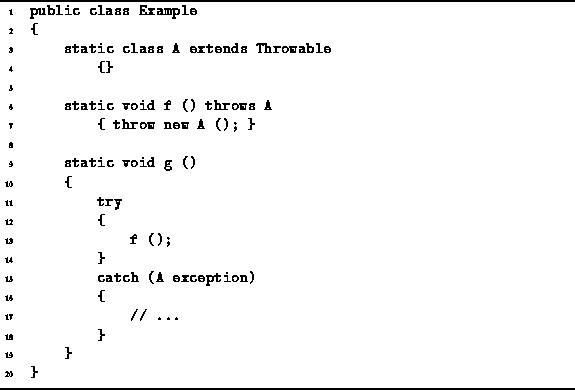

Data Structures and Algorithms
with Object-Oriented Design Patterns in Java
Data Structures and Algorithms
with Object-Oriented Design Patterns in JavaSometimes unexpected situations arise during the execution of a program. Careful programmers write code that detects errors and deals with them appropriately. However, a simple algorithm can become unintelligible when error-checking is added because the error-checking code can obscure the normal operation of the algorithm.
Exceptions provide a clean way to detect and handle unexpected situations. When a program detects an error, it throws an exception. When an exception is thrown, control is transfered to the appropriate exception handler . By defining a method that catches the exception, the programmer can write the code to handle the error.
In Java, an exception is an object.
All exceptions in Java are ultimately derived from the base
class called java.lang.Throwable.
For example,
consider the class A defined in Program  .
Since the A class extends the Throwable class,
A is an exception that can be thrown.
.
Since the A class extends the Throwable class,
A is an exception that can be thrown.

Program: Using exceptions in Java.
A method throws an exception by using the throw statement: The throw statement is similar to a return statement. A return statement represents the normal termination of a method and the object returned matches the return value of the method. A throw statement represents the abnormal termination of a method and the object thrown represents the type of error encountered.
The f method in Program throws an A exception.
Java requires that a method which throws exceptions
that are not caught within that method (see below)
must declare all the exceptions it throws
unless those exceptions are derived from the special classes
java.lang.Error
or java.lang.RuntimeException . Thus, the f method declares that it throws A.
Thus, the f method declares that it throws A.
Exception handlers are defined using a try block: The body of the try block is executed either until an exception is thrown or until it terminates normally. One or more exception handlers follow a try block. Each exception handler consists of a catch clause which specifies the exceptions to be caught, and a block of code, which is executed when the exception occurs. When the body of the try block throws an exception for which an exception is defined, control is transfered to the body of the exception handler.
In this example, the exception thrown by the f method is caught by the g method. In general when an exception is thrown, the chain of methods called is searched in reverse (from caller to callee) to find the closest matching catch statement. When a program throws an exception that is not caught, the program terminates.
 Copyright © 1998 by Bruno R. Preiss, P.Eng. All rights reserved.
Copyright © 1998 by Bruno R. Preiss, P.Eng. All rights reserved.